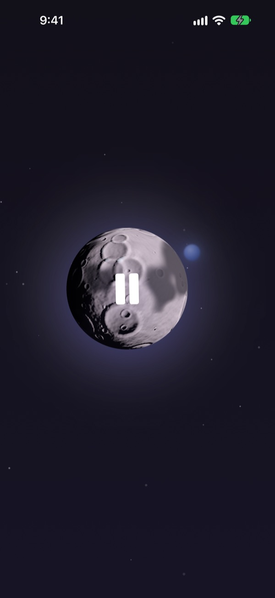
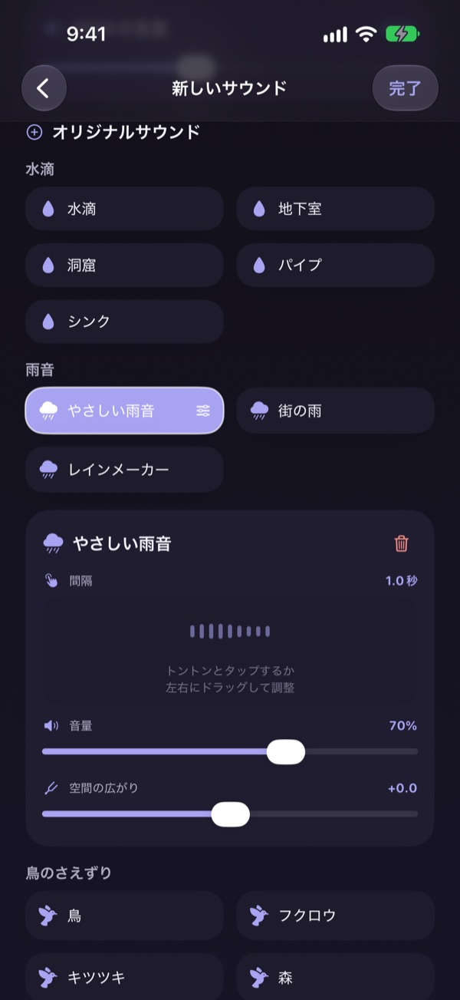
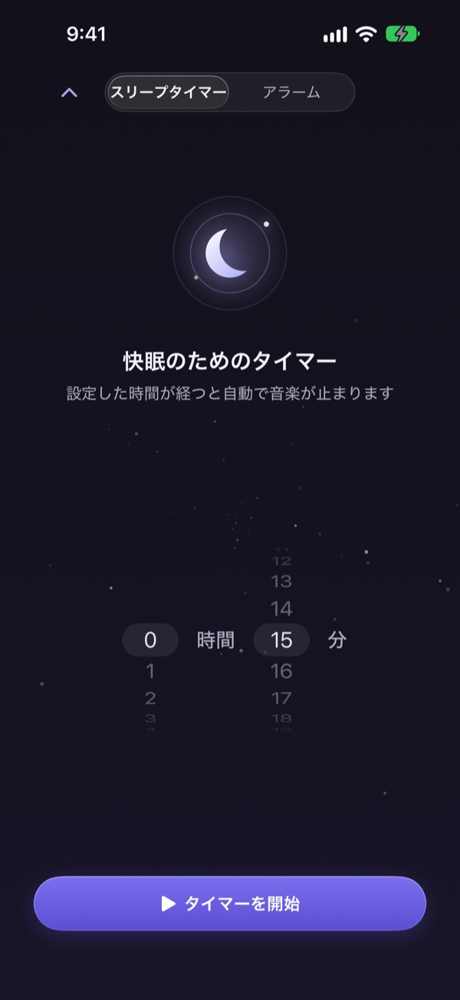
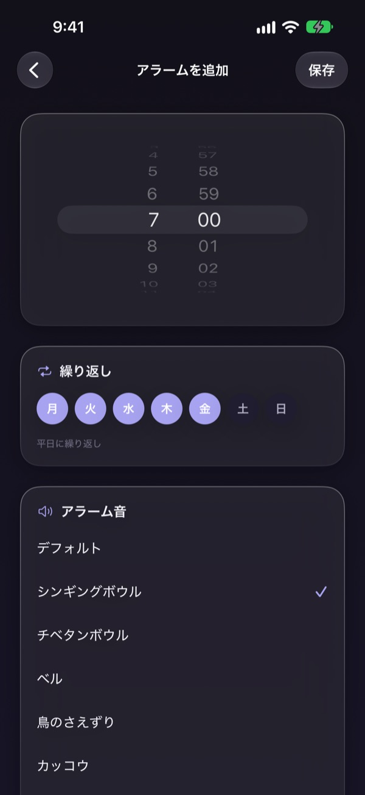
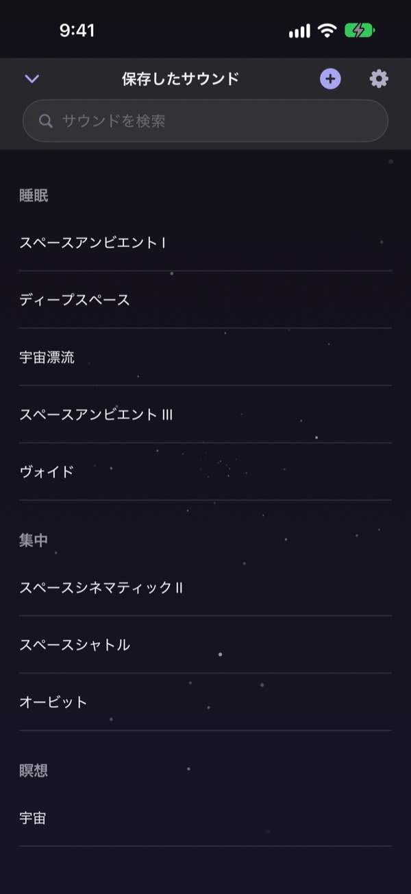

眠るための音探しで
夜をつぶさないで
雨音、水滴、シンギングボウルを重ねて自分の音を一度つくっておけば、次の夜からは月をタップするだけです。
すべての音を無料で聴けます。iPhoneとiPadに対応。

寝る前に、音を選ぶだけで1時間たっていたことはありませんか？
雨音は単調すぎて、波の音は大きすぎて、動画を流せば途中で広告が入る。Dalbitなら、好きな音どうしを自分で重ねて耳にぴったりの音をつくり、それを月ひとつにしまっておけます。
好きな音を重ねてつくる
雨音、水滴、鳥のさえずり、シンギングボウルなどを何層にも重ねます。音ごとに音量、鳴る間隔、聞こえる位置を調整し、波の音やピアノをBGMとして敷くこともできます。
できた音は名前をつけて保存し、いつでも呼び出せます。

眠ったあと、起こさずに消える
スリープタイマーは音をぷつりと切らず、ゆっくり小さくしてから止めます。終わる瞬間に目が覚めないための動きです。
画面を消しても別のアプリに切り替えても音は続き、放っておくと画面は自動で暗くなります。

朝はやさしい音で起こす
シンギングボウル、チベタンボウル、鳥のさえずり、カッコウなどの音でアラームを設定できます。曜日ごとの繰り返しにも対応しています。

月ひとつで全部できる
月をタップすると再生、もう一度タップで停止。横にスワイプで別の音、上でスリープタイマー、下で保存した音のライブラリが開きます。
気に入った音が流れたら、月を長押ししてお気に入りに追加しましょう。

はじめ方は3ステップ
- 1
月をタップ
アプリを開いて月をタップすれば、すぐに音が流れます。
- 2
横にスワイプ
気に入る音が見つかるまで横にめくってみてください。
- 3
タイマーをセットして横になる
上にスワイプして時間を決めれば、その後で音がゆっくり消えます。
月でできること
- タップ
- 再生、停止
- 横にスワイプ
- 別の音へ
- 上にスワイプ
- スリープタイマーとアラーム
- 下にスワイプ
- 保存した音のライブラリ
- 長押し
- お気に入りに追加
ロック画面の再生コントロールからも停止・再開できます。
聴くのは無料、たくさんつくるならプレミアム
無料
- すべての音を再生
- 音を重ねて自分の音をつくる
- 自分の音を3つまで保存
- ゆっくり消えるスリープタイマー
- やさしい音のアラーム
- お気に入り
Dalbit プレミアム
- 自分の音を数の制限なくつくって保存
無料トライアル付きの月額自動更新サブスクリプション
サブスクリプションは、現在の期間が終わる24時間前までに解約しない限り自動で更新され、無料トライアル終了後に料金が発生します。利用規約はAppleの標準利用規約（EULA）に準じます。
よくある質問
音の再生や切り替えはどうすればいいですか？
ホーム画面の月をタップすると再生、もう一度タップで停止します。横にスワイプすると別の音に、上にスワイプでスリープタイマー、下にスワイプで自分の音のライブラリが開きます。
画面を消すと音は止まりますか？
いいえ。画面を消しても、別のアプリに切り替えても音は流れ続けます。止めるには月をもう一度タップするか、ロック画面の再生コントロールを使ってください。
スリープタイマーが終わるとどうなりますか？
設定した時間になると、音はいきなり切れずに少しずつ小さくなってから止まります。眠ったあとに目が覚めないための動きです。
アラームが鳴りません。
最初にアラームをつくるときに、アラームの許可が必要です。設定アプリ > Dalbit でアラームの許可がオンになっているか確認してください。
つくった音はどこに保存されますか？
つくった音、アラーム、設定はすべてこのデバイスの中だけに保存されます。アプリを削除すると一緒に消えるのでご注意ください。
無料でどこまで使えますか？
すべての音を聴けて、音を重ねた自分の音を3つまで保存できます。スリープタイマーとアラームも無料です。プレミアムに登録すると、自分の音を数の制限なくつくれます。
サブスクリプションの解約方法は？
設定アプリ > Appleアカウント > サブスクリプション で Dalbit を選んで解約できます。現在の期間が終わる24時間前までに解約しないと、自動で更新されます。
機種変更したらサブスクリプションが外れました。
同じAppleアカウントでサインインし、Dalbitのサブスクリプション画面で「購入を復元」をタップすると、再び適用されます。
不具合の報告や機能の要望を送りたいです。
アプリの設定からフィードバックを送るか、下記のメールアドレスまでお送りください。通常は数日以内にお返事します。
ご質問やご意見は mizzking75@gmail.com までお送りください。